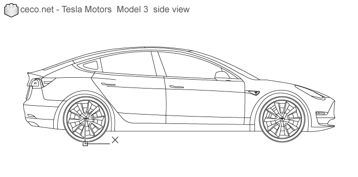
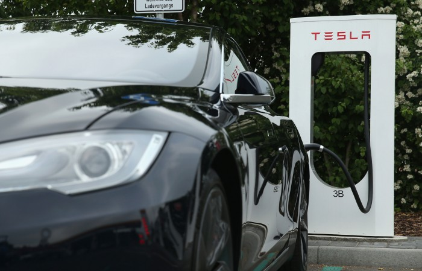

About the car
The Tesla Model 3 is an electric four-door sedan developed by Tesla.
The Model 3 Standard Range Plus version delivers an EPA-rated all-electric range of 250 miles (402 km) and the Long Range versions deliver 322 miles (518 km).
The Model 3 carries full self-driving hardware, with periodic software updates adding functionality.
Characteristics

1. Safety is the most important part of the overall Model 3 design. The metal structure is a combination of aluminum and steel, for maximum strength in every area. In a roof-crush test, Model 3 resisted four times its own mass, even with an all-glass roof: that's the same weight as two full-grown African elephants.
2. Model 3 comes with the option of dual motor all-wheel drive, 20” Performance Wheels and Brakes and lowered suspension for total control, in all weather conditions. And a carbon fiber spoiler improves stability at high speeds, all allowing Model 3 to accelerate from 0-60 mph in as little as 3.2 seconds.
Tesla All-Wheel Drive has two independent motors. Unlike traditional all-wheel drive systems, these two motors digitally control torque to the front and rear wheels—for far better handling and traction control. Your car can drive on either motor, so you never need to worry about getting stuck on the road. If one motor stops working, you can safely continue to your destination with the second.

3. Model 3 is fully electric, so you never need to visit a gas station again. If you charge overnight at home, you can wake up to a full battery every morning. And when you’re on the road, it’s easy to plug in along the way—at any public station or with the Tesla charging network. We currently have over 16,000 Superchargers worldwide, with six new locations opening every week.
4. Autopilot advanced safety and convenience features are designed to assist you with the most burdensome parts of driving.
The inside of Model 3 is unlike any other car. You can use your smartphone as a key, and access all driver controls in the central 15-inch touchscreen. The all-glass roof extends from front to back, creating a sense of openness from every seat.